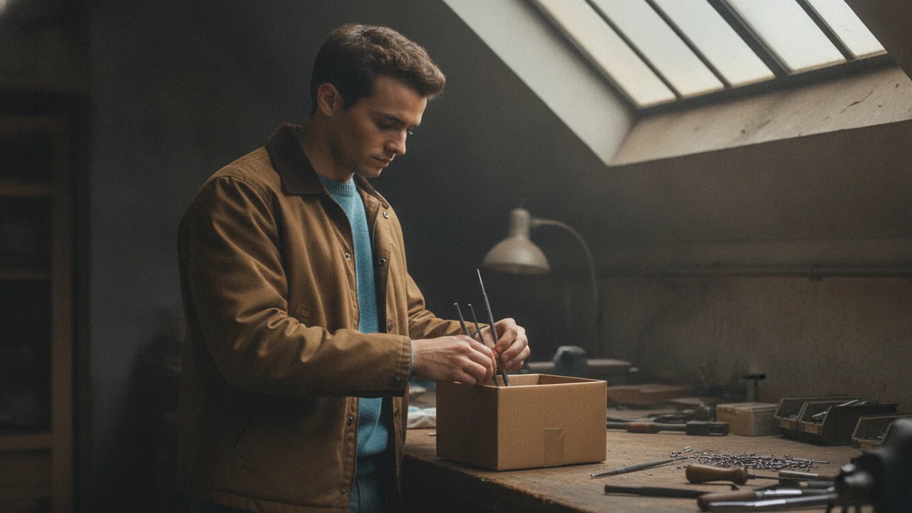
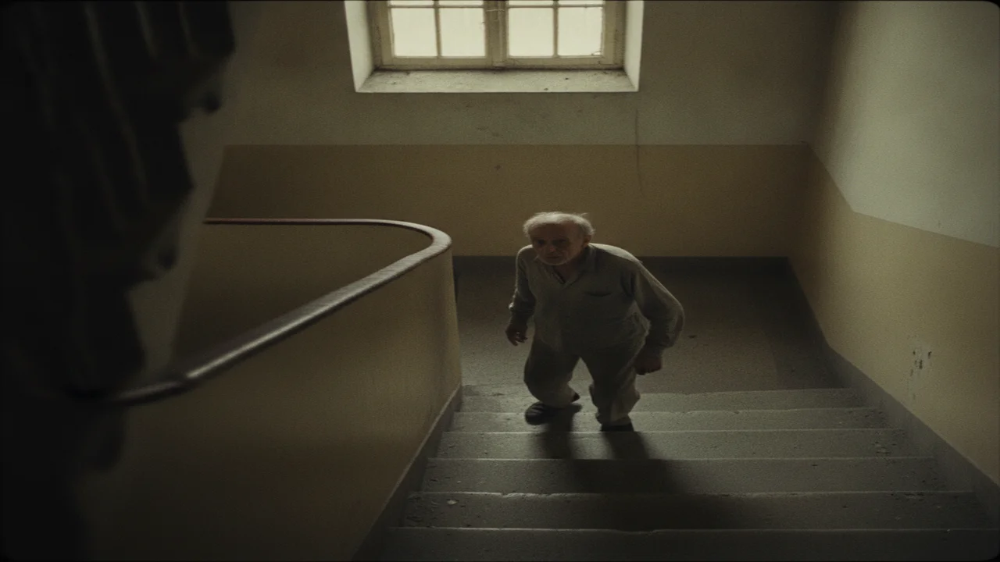
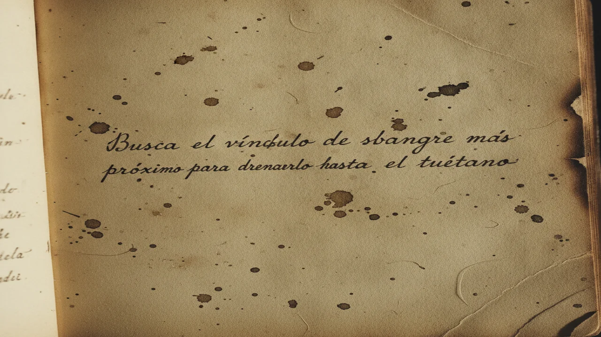
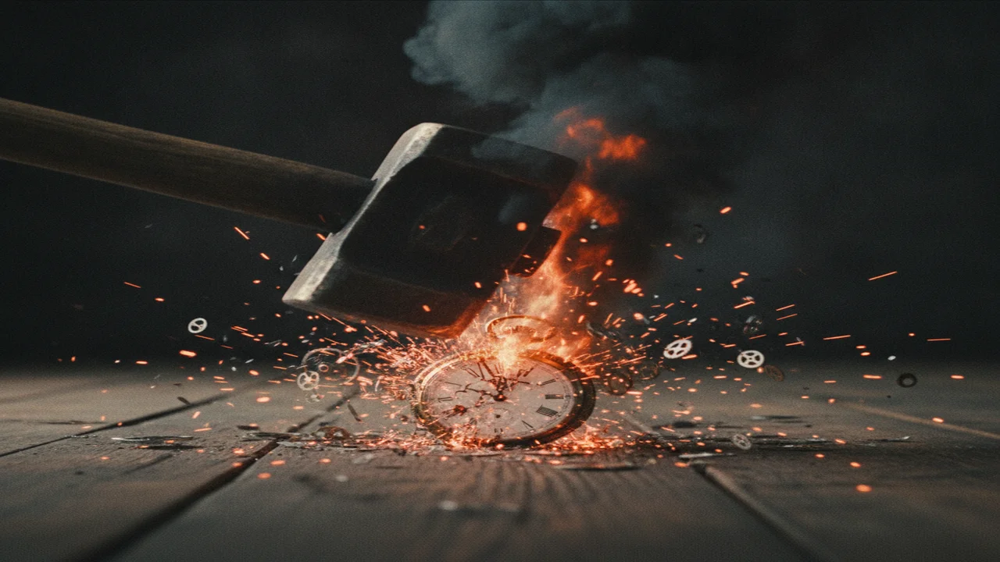
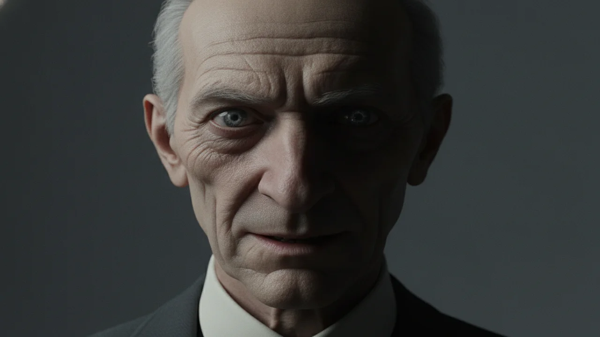

El polvo flotaba bajo el tragaluz del taller. Julián Valdés llevaba tres días enterrado en el nicho parroquial, pero el hedor a grasa de relojero y virutas de boj persistía en cada rincón. Álex, de veinticuatro años, llenaba una caja con limas de precisión. Todavía le costaba asimilar el desenlace de su abuelo. Durante dos años, el anciano no había sido más que una sombra de setenta y ocho años postrada en una cama de hierro; sin embargo, cinco días antes de desplomarse con el corazón reventado, Julián bajó las escaleras erguido. Tenía la piel de las mejillas tan tersa que parecía no haber conocido jamás una arruga, y desayunó con voracidad mientras observaba a sus nietos con calma gélida. Sus ojos, de un gris plomizo sin fondo, brillaban con una fijeza inhumana que a Álex se le clavó en el estómago.
Al mover el banco de trabajo, una moldura del zócalo cedió con un chasquido. En el hueco del muro apareció una arqueta de latón con el pestillo doblado. Álex la forzó con un destornillador.
Dentro descansaba un reloj de bolsillo de plata ennegrecida por el azufre. Carecía de corona para darle cuerda. En su superficie destacaba un grabado de raíces que se mordían entre sí. Álex oprimió el pulsador lateral.
La tapa saltó con un zumbido sordo. La esfera era de porcelana cuarteada, dividida en nueve sectores desiguales con números romanos desalineados y una única aguja de acero azulado. En cuanto el aire rozó el cuadrante, la aguja dio una sacudida espasmódica, retrocedió tres marcas y se clavó sobre un símbolo triangular.
Un chasquido seco resonó entre los muros. El vaho de la respiración de Álex se condensó en el aire, de pronto gélido. Un olor denso a ozono y hollín mojado le invadió la garganta. Cerró la tapa de golpe y el zumbido cesó, devolviendo al taller el silencio pesado de la tarde.
El reloj pesaba en el bolsillo como plomo frío. Cuando Álex subió a la vivienda familiar, el aroma a tostadas templó el ambiente.
Clara, de doce años, estaba a la mesa con las piernas cruzadas en la silla. Tenía la nariz salpicada de pecas y los dedos con témpera azul.
—Has tardado un siglo —protestó la niña sin levantar la vista de su bloc—. La señorita Marta nos ha puesto divisiones con decimales.
Álex sonrió con esa ternura cansada que solo su hermana lograba arrancarle desde que sus padres murieron en la carretera seis años atrás. Le revolvió el flequillo castaño y dejó la arqueta sobre el aparador.
—Te ayudaré después de cenar, renacuaja. Primero tengo que barrer abajo.
A media tarde sonó el timbre. Era Anselmo, el viejo chamarilero que compraba piezas de relojería al abuelo.
—Sentí lo de Julián, muchacho —dijo cruzando el umbral—. Tuvo un final extraño. El viernes antes de morir caminaba como un mozo de treinta años, con una soltura que me dejó helado. Vine por si dejó algún cuaderno…

Álex señaló el aparador.
—Solo encontré herramientas. Y este reloj.
Anselmo miró la caja de plata y palideció. Dio un paso atrás y señaló el artefacto con un dedo trémulo.
—Dime que no lo has abierto, Álex. Dime que no has tocado el resorte.
—Solo lo abrí un segundo abajo para ver si marchaba.
Anselmo soltó un quejido y se llevó las manos a las sienes, como si una punzada le taladrara el cráneo. Sus ojos parpadearon despacio, perdiendo cualquier lucidez; el pánico se borró de golpe, sustituido por una máscara inerte de desmemoria.
—¿De qué… de qué hablábamos? —murmuró desorientado—. Iba a comprar pan a la tahona. Se me ha hecho tarde.
Salió arrastrando las suelas por el descansillo. Álex regresó al aparador y tomó el artefacto. Al rozar el metal, sintió una vibración tenue bajo la plata: una cadencia sorda, semejante al pulso de una arteria viva.
Durante los dos días siguientes, una sombra cayó sobre la casa.
Clara dejó de reírse mientras desayunaba. El lunes por la mañana no fue capaz de levantarse de la cama; soltó un quejido ahogado y se llevó las manos a las rodillas.
—Me duelen los huesos, Álex —sollozó arrebujada bajo el edredón—. Me queman las muñecas, como si tuviera agujas clavadas dentro.
Álex le apartó el pelo de la frente. Su piel desprendía una frialdad áspera y cenicienta. Al mirarla a la luz de la lámpara, descubrió arrugas finas alrededor de sus ojos, pliegues secos impropios de una niña. Sus mechones castaños claros habían perdido el brillo, volviéndose quebradizos como esparto.

El médico del ambulatorio examinó a la pequeña y auscultó sus pulmones con ceño severo.
—Las constantes son anormales para doce años —sentenció con perplejidad—. Las articulaciones presentan un desgaste propio de una vejez avanzada. Tramitaremos un ingreso de urgencia.
Regresaron a casa a la espera de la ambulancia. Clara apenas lograba sostener la cabeza; sus manos temblaban con temblor senil. Álex la recostó en el sofá y la arropó con tres mantas de lana.
—No te preocupes, enana. Te van a curar. Te lo juro.
Clara entreabrió los ojos. Sus iris miel estaban cubiertos por un velo lechoso.
—El reloj, Álex… —susurró con un hilo de voz centenaria—. El reloj no para de llamarme. Dice que tiene frío… que le dé mis años para no morirse de hambre.
Álex se puso en pie de un salto. La arqueta del aparador estaba abierta y vacía.
Sobre la mesa del centro, el reloj de plata descansaba con la tapa abierta. La aguja giraba a un ritmo suave y continuo, zumbando como un tábano en un frasco. Entre la esfera y el cuerpo de Clara flotaba una hebra tenue de vapor traslúcido, un brillo nacarado que brotaba del pecho de la niña y era absorbido por el mecanismo. En el borde exterior de la caja, diminutas muescas recién grabadas se encendían al rojo vivo, devorando su infancia.
Álex se abalanzó sobre el reloj e intentó cerrar la tapa. El metal estaba tan gélido que le desgarró la piel de los dedos como hielo seco. El resorte resistió con una fuerza invisible que parecía alimentarse de su rabia. Desesperado, arrojó una manta sobre la esfera para cortar el haz de luz y bajó al taller bajo una lluvia torrencial.
Álex encendió la bombilla del sótano y apartó paneles. Tras un ladrillo suelto que olía a caliza podrida, encontró un cuaderno forrado en badana oscura.
Se sentó en el suelo y pasó las hojas con dedos febriles. La caligrafía angulosa de Julián cubría los renglones desde mil novecientos sesenta y dos, cuando halló el artefacto en Amberes. El reloj era el receptáculo de una entidad voraz que habitaba entre los pliegues de la realidad, un parásito que no podía subsistir sin devorar la carne y los días de los vivos.
Álex leyó con el estómago encogido las notas recientes:

«El reloj se sacia al principio con migajas. Roba días sueltos a quienes lo miran de cerca para mantener joven al custodio. Pero el parásito tiene un hambre infinita. Cuando el portador envejece, busca el vínculo de sangre más próximo para drenarlo hasta el tuétano. Por eso Clara está cayendo. Si no lo alimento, la secará hasta dejar solo una cáscara de polvo».
Álex buscó una salida desesperadamente.
«Destruirlo a golpes no sirve. Si se rompe mientras roba, la víctima muere en el acto. Solo hay una forma de romper la atadura: el mecanismo exige una compensación voluntaria. La criatura no quiere simples días robados; los días arrebatados por la fuerza son frágiles y se pudren deprisa. Lo que anhela es una entrega voluntaria. Una persona que ceda su juventud e identidad por libre elección. Solo quien entrega sus años puede saturar el receptáculo, liberar a los suyos y sellar la máquina. Pero el coste es absoluto: perderá cada hora de su vida en minutos y su nombre desaparecerá del mundo».
Álex cerró el cuaderno. Tomó un mazo de forja de bronce macizo y subió los escalones de tres en tres.
En el salón, el silencio era total salvo por el estertor entrecortado de Clara. La niña parecía un cadáver menudo. Sus pómulos sobresalían afilados bajo una tez cetrina; sus manos infantiles eran garras nudosas y un mechón blanco le caía sobre la frente arrugada. El pulso en su cuello era un aleteo a punto de extinguirse.
Sobre la mesa, el reloj resplandecía con fosforescencia cárdena. La aguja giraba a velocidad vertiginosa.
Álex arrojó el mazo sobre la alfombra y se arrodilló junto a su hermana. Le besó los nudillos castigados.
—No vas a morir por los pecados del abuelo, Clara —susurró con voz firme—. No te vas a quedar aquí.
Se puso en pie ante la mesa y clavó la mirada en la esfera.
—Tómame a mí —dijo con voz clara—. Te entrego mis años. Toda mi juventud, cada día que me queda, mi nombre y mi vida entera. Es una entrega voluntaria. Suelta a Clara.
Álex tomó el reloj y presionó la espiga central del eje. El metal afilado se le clavó en la palma, hundiéndose en la carne hasta el hueso.
Un fogonazo blanco le estalló tras los ojos. Álex cayó de rodillas mientras un alarido se le escapaba del pecho. Sintió una fuerza titánica absorbiendo cada latido, cada gota de vigor de sus veinticuatro años. El tiempo caía sobre él como una avalancha hirviendo.

Vio sus propias manos marchitarse al instante. La piel se volvió fina y apergaminada; las venas se hincharon en cordones amoratados y los nudillos se deformaron con nudos dolorosos. Su columna se encorvó bajo el peso de seis décadas acumuladas en sesenta segundos. El cabello se le desprendió y la vista se le nubló en una catarata lechosa.
Pero a través de la niebla, vio el milagro.
El vapor luminoso regresó hacia Clara, derramándose sobre su pecho. Las arrugas de la niña se alisaron; el rubor cálido tiñó sus mejillas, el mechón blanco recuperó su tono castaño y su respiración volvió a ser limpia y profunda. Clara estaba a salvo.
El reloj tembló con violencia, saturado por el festín voluntario. Su zumbido se volvió un chillido ensordecedor.
Con el último resto de aire en sus pulmones marchitos, Álex estiró los brazos hacia el mazo de bronce. Alzó la herramienta y descargó el golpe sobre la esfera.
La porcelana quebró en mil astillas ardientes. Los engranajes reventaron en esquirlas de plata y un chorro de humo negro brotó con un graznido espectral que se disolvió en el aire.
Álex sonrió con labios partidos. Su cuerpo, convertido en un anciano de noventa años, se desplomó sobre la alfombra. Cerró los ojos y la oscuridad lo acogió en un silencio infinito.
El graznido de los gorriones en el alféizar despertó a Clara.
La luz de la mañana entraba a raudales, proyectando rectángulos dorados sobre el suelo. La tormenta se había alejado, dejando un cielo azul sereno.
La niña parpadeó, desperezándose con la elasticidad de sus doce años. No sentía dolor en los tobillos ni pesadez en las manos. Se miró las palmas: su piel estaba sonrosada y suave, con el lunar intacto. Se incorporó del sofá, sintiéndose descansada y ligera.
—¿Álex? —llamó, frotándose los ojos.
Nadie contestó.

Avanzó descalza por la tarima. En el centro de la estancia vio los restos del artefacto: fragmentos de cristal, piececillas de latón retorcido, el mazo de bronce y una fina capa de ceniza. Pero no había ningún cuerpo en el suelo. No había rastro de ancianos ni de heridos.
—¡Álex! —gritó con un nudo en la garganta—. ¡Álex, no hagas bromas!
La puerta de la cocina chirrió suavemente.
Un joven alto y esbelto cruzó el umbral. Llevaba puesta la cazadora de lona marrón sobre el jersey azul petróleo y los vaqueros oscuros. Tenía el pelo castaño ondulado y los hombros firmes de veinticuatro años. Sostenía dos tazas de leche humeante y un plato con tostadas.
—¿Por qué gritas tanto, renacuaja? —dijo con una sonrisa templada, exactamente con la misma voz que la despertaba cada mañana—. Ya está el desayuno listo.
Clara soltó un sollozo de alivio y se arrojó a sus brazos, enterrando el rostro en la cazadora, que olía a lluvia limpia y a jabón de afeitar.
—¡Tuve una pesadilla horrible! —lloró contra su pecho—. Soñé que el reloj te hacía viejo por salvarme.
El joven soltó una risita suave y le acarició el pelo con una mano tibia y firme.
—Solo ha sido un mal sueño, Clara. Ya pasó todo. Estoy aquí contigo.
Se agachó a su altura para mirarla de cerca. Con la yema del pulgar, le secó una lágrima de la mejilla.
—¿Te acuerdas del verano que te hiciste una brecha en la rodilla saltando desde la peña? —susurró el muchacho—. Te llevé a cuestas dos kilómetros y te puse la tirita del oso panda. Te prometí que mientras yo estuviera a tu lado, nada malo iba a tocarte.
Clara asintió sonriendo entre lágrimas. Era su hermano. Era cada memoria de su infancia, cada palabra compartida, cada secreto que solo ellos dos guardaban.
Iba a abrazarlo de nuevo cuando un rayo de sol iluminó de lleno el rostro del joven.
La sonrisa seguía en sus labios, perfecta, inmutable. Pero sus ojos no parpadeaban. En el fondo de las cuencas no estaba el brillo castaño cálido de Álex.
Eran unos ojos de un gris plomizo, lechoso y desvaído, fríos como la superficie de un pozo congelado: los ojos antiguos e implacables de su abuelo Julián.
El muchacho inclinó la cabeza un milímetro, sin perder la sonrisa, y le apretó el hombro con una fuerza lenta y desmesurada.
—Una vida entera, Clara —murmuró la voz de su hermano, mientras una sombra ajena asomaba en sus pupilas grises—. Por fin… una vida entera para mí solo.